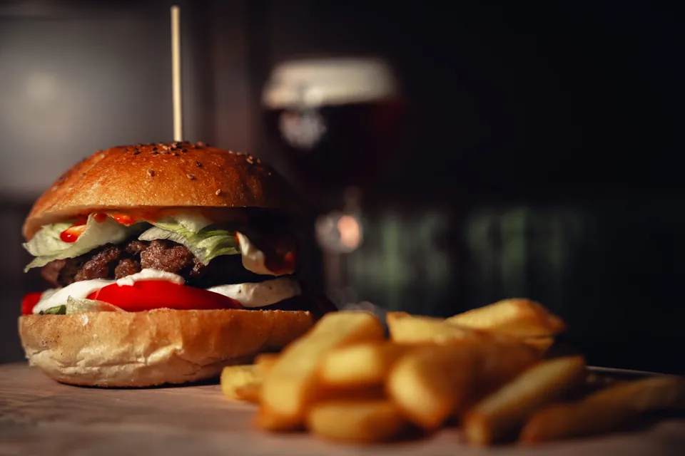

Brasserie-bar du soir
La Tablée des Forges
Des burgers généreux, des plats de brasserie et des bières à la pression, à table ou au comptoir, du dîner jusque tard dans la soirée.

Brasserie de quartier
On dîne, puis on reste
La Tablée des Forges réunit un comptoir, des tables et une carte courte de brasserie. On s’installe pour dîner, on reste pour la conversation autour d’un verre.
Établissement fictif : La Tablée des Forges est une démonstration et n’existe pas.
Sur la carte
Quatre burgers, deux plats de brasserie, deux desserts, des bières à la pression et des boissons sans alcool.
- Burgers — Le Classique, Le Fumé, Le Croustillant et Le Végétal.
- Plats de brasserie — Fish & chips et La Planche du soir.
- Desserts — Brownie au chocolat et Crumble aux pommes.
- Bières et sans alcool — Trois bières à la pression, une bière sans alcool et une limonade.
Le lieu
Un comptoir, des tables et la possibilité de prolonger la soirée autour d’un verre. Le service du soir et la localisation fictive sont réunis sur la page du lieu.